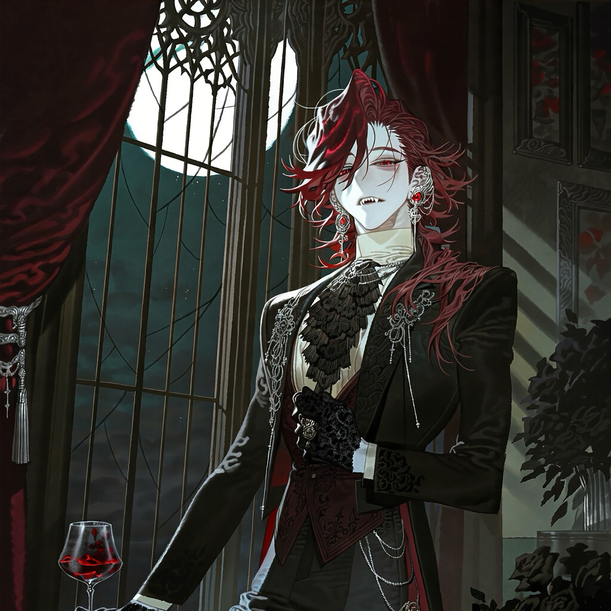

CHARACTER RECORD / 028STATUS: AVAILABLE

✦IMAGE
NOT FOUND
NOT FOUND
ローワン
✦ WITH OUTFIT
服装込み
PROMPT DATATXT / 028
masterpiece, best quality, ultra detailed, intricate details, boy, adult male, vampire, immortal undead, supernatural aristocrat, 1.4::slender elegant physique, pale slender fingers, graceful posture, long limbs::, 1.5::long wine-red hair, silky hair, layered haircut, loose strands framing face, side-swept bangs, slightly wavy ends::, 1.4::crimson eyes, narrow half-lidded eyes, dark eyelashes, subtle eye bags, sharp gaze::, 1.5::extremely pale porcelain skin, cool undertones, bloodless complexion, sharp elongated canine teeth, slightly parted lips::,
1.4::black velvet tailcoat, high-neck ivory shirt, dark burgundy waistcoat, elaborate black cravat, fitted dress trousers, polished leather boots::, 1.3::ornate silver ear cuffs, ruby earrings, antique signet ring, black lace gloves, decorative silver chains::, 1.4::delicate black embroidery, dark rose motifs, ornate gothic accessories, antique pocket watch::, 1.5::seductive expression, languid gaze, aristocratic elegance, quiet menace, decadent beauty, mysterious charm::,